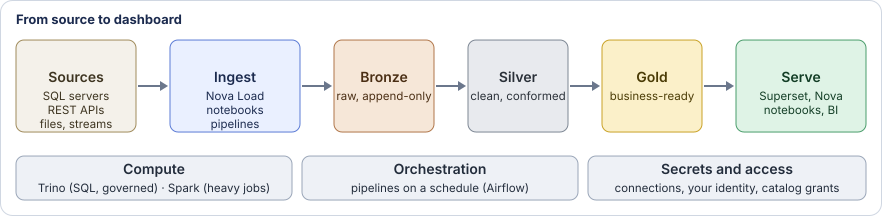
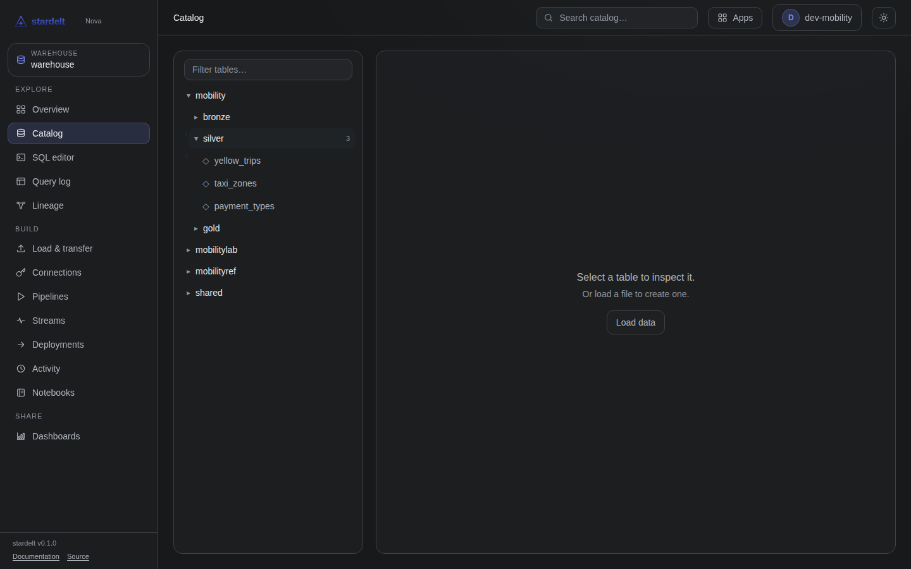
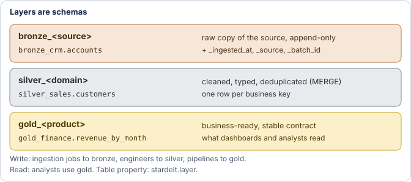
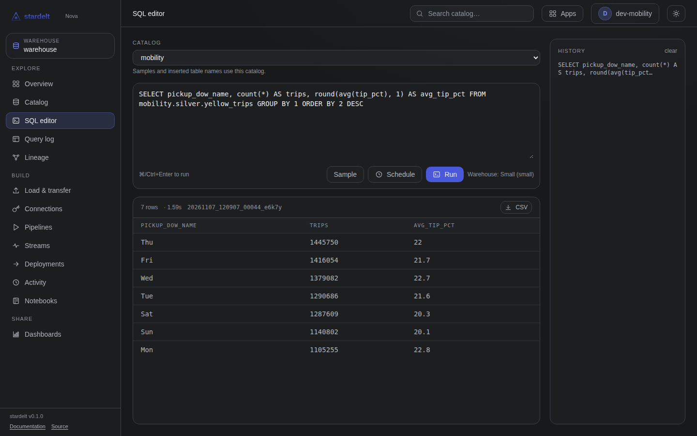
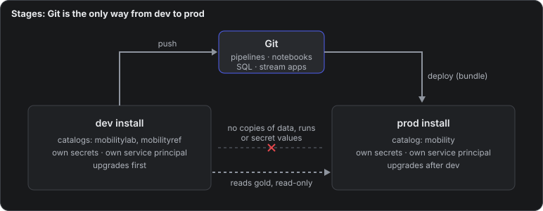
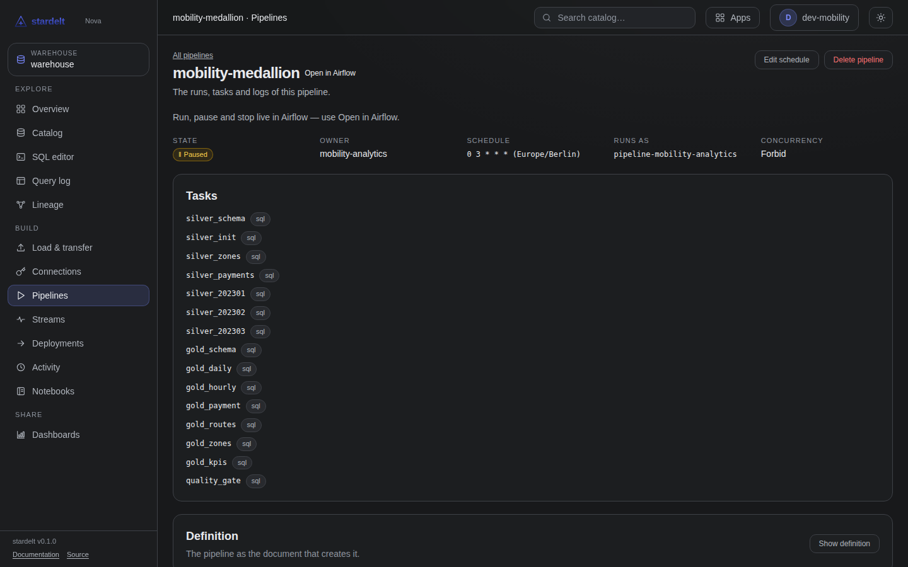
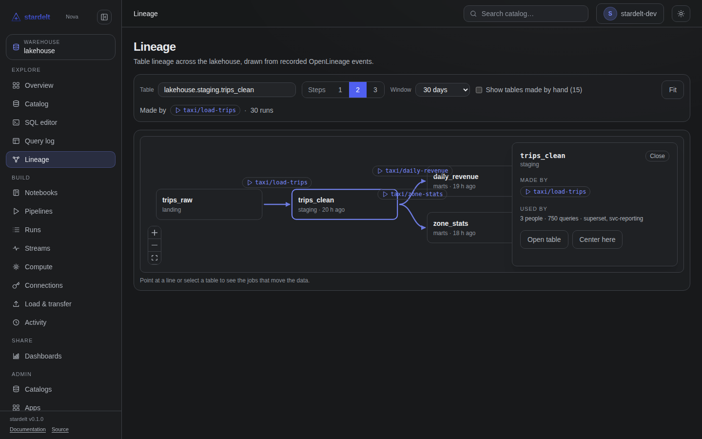
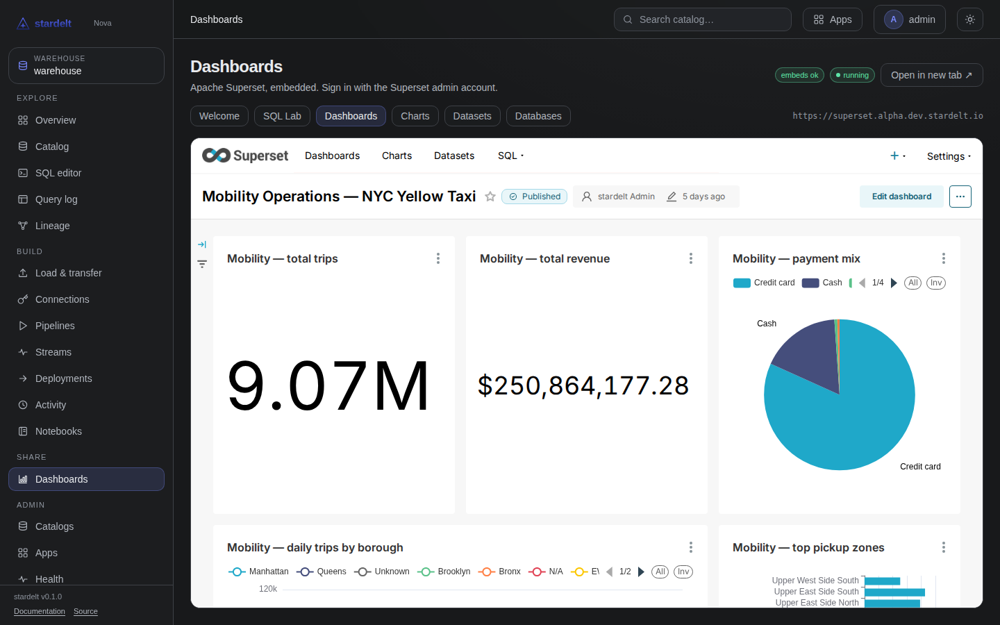

Load, model, prove, ship and watch: in your own editor, through Git, as yourself.
The path

Choose how you work
JupyterLab in the browser
Quick exploration, a chart, a first look at a table.
VS Code on your workspace
Your own editor, Spark and table writes, on the platform.
VS Code on your laptop
Light SQL, tests and editing offline, with queries on the platform.
01
Get data in
A file, another database or an API — everything lands in the bronze schema of your domain catalog.
Connect a source system
Keep credentials out of the notebook: ask for them at run time.
stardelt.write_df writes as you, so your table permissions apply.
A connection keeps the secret in the platform's secret store, not in Git.

02
Model in layers
Build each layer from the one before, in SQL.
Bronze, silver, gold

The three layers are schemas inside your domain catalog — there are no default bronze, silver or gold catalogs.
Query where you work
%sql and %%sql run in a notebook cell; the connection is called warehouse.
The token is read on every request, so an open kernel survives a rotation.
The query runs as you, in SQL or with spark.
The SQL editor runs the same statements.

03
From dev to prod
Ship through Git
Describe
A bundle in Git says what the team publishes, with one target per stage.
Try in dev
Deploy to your own development stage, where pipelines are named dev-<you>-<name> and nothing is scheduled.
Review in a pull request
Validate needs nothing from the cluster; plan asks Nova and writes nothing.
Publish to production
Deploy writes only when Nova accepts every pipeline, and stamps each with its commit.
Build once, deploy many

Prove it before anyone reads it
Write to a branch
With publish: wap, a run writes to an audit branch of each table, not to what readers see.
Check the branch
A quality task runs its checks on that branch. A check passes when its query returns no rows.
Publish or stop
The table moves only when every check passes. A failing check stops the run, and readers never see the bad data.
Keep notebooks thin
Logic belongs in .py modules with pytest tests, where it is reviewable and testable without a kernel.
04
Run it every day
Publish the notebook or SQL as a pipeline, and Airflow runs the schedule.
Schedule and watch
Publish the notebook or SQL as a pipeline; the schedule runs in Airflow.
Run now, Pause, Resume and Stop are on the pipeline page, checked against your group.
Maintenance runs on its own: every catalog gets a CronJob that compacts, expires and removes.

Watch it run
Open a run to see the executed notebook, opened at the cell that failed.
05
Where does this table come from?
Three questions, one tab
Made by
The pipeline that writes it, its runs, and when it last ran.
Made from
The tables it is built from, grouped by distance.
Used by
The people, the tools and the number of queries.
The graph

Open graph draws the same data left to right: the tables that feed this one on the left, this table in the middle column and everything built from it on the right, one line per pair of tables.
Show it
Open Superset from Nova → Dashboards and sign in with your platform account.
Each catalog gets its own Superset database; point dashboards at the gold schema.
A published dashboard is visible only to the groups whose catalogs its charts use.

Not there yet
A python task, a preview per pull request and a backfill for past dates are not available yet.
try it
stardelt.io/docs/build
Every step of this deck is a guide you can follow.